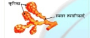
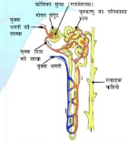

मनुष्य में वृक्क एक तंत्र का भाग है जो संबंधित है
(a) पोषण (b) श्वसन (c) अत्सर्जन (d) परिवहन
(c) अत्सर्जन
पादप में जाइलम उत्तरदायी है
(a) जल का वहन
(b) भोजन का वहन
(c) अमीनो अम्ल का वहन
(d) आक्सीजन का वहन
(a) जल का वहन
स्वपोषी पोषण के लिए अवश्यक्त है
(a) कार्बन डाईआक्साइड तथा जल
(b) क्लोरोफिल
(c) सूर्य का प्रकाश
(d) उपरोक्त सभी
(d) उपरोक्त सभी
पयरुवेट के विखंडन से यह कार्बन डाईआक्साइड, जल तथा उर्जा देता है और यह क्रिया होती है
(a) कोशिकाद्रव्य
(b) माईटोकानडिया
(c) हरित लावक
(d) केन्द्रक
(b) माईटोकानडिया
हमारे शारीर में वसा का पाचन केसे होता हैं ? यह प्रक्रम कंहा होता है |
हमारे शारीर में वसा का पाचन मुख्य रूप से क्षूंद्रान्त् में होता है | इस कार्य के लिए क्षूंद्रान्त्, यकृत तथा अग्नाशय से श्रवण प्राप्त करता है |
यंहा पित्त लवण द्वारा भोजन में उपस्थित वसा की बड़ी गोलिकाओ को छोटी गोलिकाओ में खंडित कर दिया जाता है जिनमे एंजाइम की
क्रियाशीलता बढ जाती है | अग्नाशय से आने वाले अग्नाश्यिक रस इन छोटे गोलिकाओ वाले वसा को लाइपेच एंजाइम की माध्यम से पचा देता है |
एंजाइम अंत में वसा को वसा अम्ल तथा में परिवर्तित कर देता है |
भोजन के पाचन में लार का क्या भूमिका है ?
भोजन के पाचन में लार का अहम् भूमिका होती है |आहार का आस्तर बहुत कोमल होता है | लार सम्पूर्ण भोजन में फ़ैल कर उसे चबाने तथा गिला करने
में मदद करता है | ताकि इसका मार्ग आसान हो जाए | लार में उपस्थित एंजाइम जिसे एमिलेस कहते है स्टार्च के जटिल अणुओ को शर्करा में विखंडित
कर देता है
|
स्वपोषी पोषण के लिए आवश्यक परिस्थितियों कौन सी है और उसके उपोत्पाद क्या है ?
स्वपोषी पोषण के लिए आवश्यक परिस्थितिया कार्बन दाईआक्साइड , सूर्य का प्रकाश ,जल तथा क्लोरोफिल की उपस्थिति है| कार्बोहाइड्रेट तथा आक्सीजन
स्वपोषी पोषण के मुख्य उपोत्पाद क्या है |
6CO2 + 6H2O --> C6H12O6 + 6O2
वायविय तथा अवायाविक श्वसन में क्या अंतर है ? कुछ जीवो के नाम लिखिए जिनमे अवायवीय sह्व्सन होता है |
वायविय तथा अवायाविक श्वसन में अंतर :
| वायविय श्वसन | अवायाविक श्वसन |
|---|---|
| यह आक्सीजन की उपस्थिति में होता है | यह आक्सीजन की अनुपस्थिति में होता है |
| गैस का आदान प्रदान वातावरण से होता है | गैसों का आदान प्रदान नहीं होता है |
| शवसन के उपरांत CO2 तथा H2O उत्सर्जित होता है | श्वसन के उपरांत CO2 तथा C2H3OH उत्सर्जित होता है |
| अदिक मात्रा में उर्जा उत्पन्न होता है | अपेक्षाकृत कम उर्जा उत्पन्न होता है |
गैस के अधिकतम विनियम के लिए कुपिकाए किस प्रकार अभिकल्पित है ?
फैफड़ोके अन्दर गुब्बारे जैसी एक संरचना होती है जिसे कुपिकाए कहते है |इसका भीतरी भाग छोटी-छोटी नालिकाओ में विभाजित हो जाता है और ये
एक विस्तृत सतह का निर्माण करती है जिससे गैसों का अधिकतम बिनिमय हो सके| कुपिकाओ की भित्ति में रुधीर वाहिकाओ का विस्तृत
जल होता है | जब हम साँस लेते है तो हमारी वक्षगुहिका बड़ी हो जाती है और वायु विस्तृत कुपिकाओ में भर जाता है तो ये फूलकर बड़े क्षेत्रफल
में फ़ैल जाता है और गैसों के विनिमय के लिए अधिकतम क्षेत्रफल प्रदान करता है
हमारे शरीर में हिमोग्लोबिन की कमी के परिणाम क्या हो सकता है |
हिमोग्लोबिन का मुख्य कार्य हमारे शारीर में अक्सिजन् पहुचाना होता है | हिमोग्लोबिन की कमी के कारण शारीर में समस्त भागो में प्रयाप्त आक्सीजन पहुच नहीं पता है | जिसके कारण शारीर के विभिन्न अंगो को कार्य करने के लिए आवश्यकत उर्जा नहीं मिलती जिससे हमें कमजोरी या थकान का अनुभव होने लगता है |
जाइलम तथा फ्लोएम में पदार्थो के वहन में क्या अंतर है ?
जाइलम तथा फ्लोएम में अंतर:
| जाइलम | फ्लोएम |
|---|---|
| जाइलम पौधे में जल तथा खनिज लवण का वहन करता है | फ्लोएम पौधों में तैयार भोजन को विभिन्न भागो तक पहुचता है | |
| जल का वहन जड़ से ऊपर की और होता है | पत्तियों में तैयार भोजन का वहन सभी दिशाओ में होता है |
| जाइलम द्वारा जल का वहन साधारण भौतिक बलों जैसे वाष्पोत्सर्जन आदि द्वारा होता है | फ्लोएम द्वारा भोजन के वहन में उर्जा (ATP के रूप में ) की आवश्यकता होती है |
फुफ्फुस में कुपिकाओ की तथा वृक्क में वृक्काणु (नेफ्रन) की रचना तथा क्रियाविधि की तुलना कीजिये
फुफ्फुस में कुपिकाओ की तथा वृक्काणु की रचना तथा क्रियाविधि की तुलना :
| कुपिका | वृक्काणु |
|---|---|
| फुस्फुस में कुपिकाए छोटे छोटे गुब्बारे जैसी संरचना होती है | वृक्क में वृक्काणु (नेफ्रन ) नलिका के आकर के निस्यंदन एकक होते है |
| कुपिकाओ की दीवारे एक कोशिका जितनी ही मोटी होती है और इसमें रक्त कोशिकाओ का एक गुच्छा होता है  |
फुस्फुस की तरह ही बहुत पतली भित्ति वाली वाली रुधीर कोशिकाओ का गुच्छा होता है  |
| कुपिकाए एक सतह उपलब्ध कराती है जिससे गैसों (CO2 और O2 ) का विलयन होता है | नाइट्रोजन वर्ज्य पदार्थ जैसे यूरिया या यूरिक अम्ल आदि को छान कर अलग कर दिया जाता है | ग्लुगोस , एमिनो अम्ल ,लवण एंव प्रचुर मात्रा में जल का पूरनवशोषण होता है |